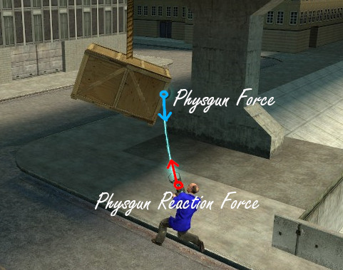

This was just a massive 'what if' project constructed to put to rest
some thought experiments involving the behavior of the Physics Gun in real life.
The 'what if' was this: What if the physics gun obeyed the laws of physics?
The way it is in unmodded sandbox, the physics gun violates Newton's Third Law,
as moving objects with it does not produce any reaction forces on the player.
This allows for techniques such as prop flying, where players can fly at high speed
by standing on objects and lifting them. Some may find this entertaining, but
I see it as a physics atrocity. If this worked in real life, we'd already be visiting
other star systems by now. I had to do something.
With a little vector math, calculus, and quaternion magic, I was able to rework
the physics gun—adding back the neglected reaction forces and coupling held objects
to the player. The results of this were extremely entertaining—I discovered several
new physically accurate tricks and gimmicks that weren't possible with the stock
physics gun. Such features included wedging myself between walls, scaling
buildings with hook-shaped props, and even using the inertia of heavy props to
fling myself around the map.
This is truly one of the most entertaining E2 chips I've ever created.
It's short too—only around 120 lines of code.
Special thanks to @Jacbo for
providing me the code in the pointVel function.